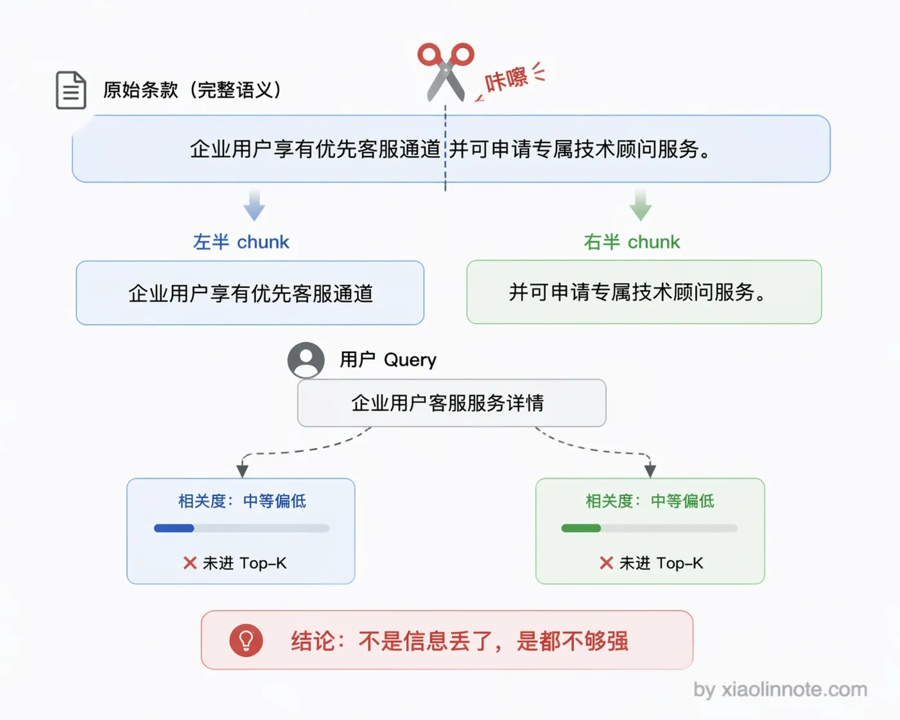
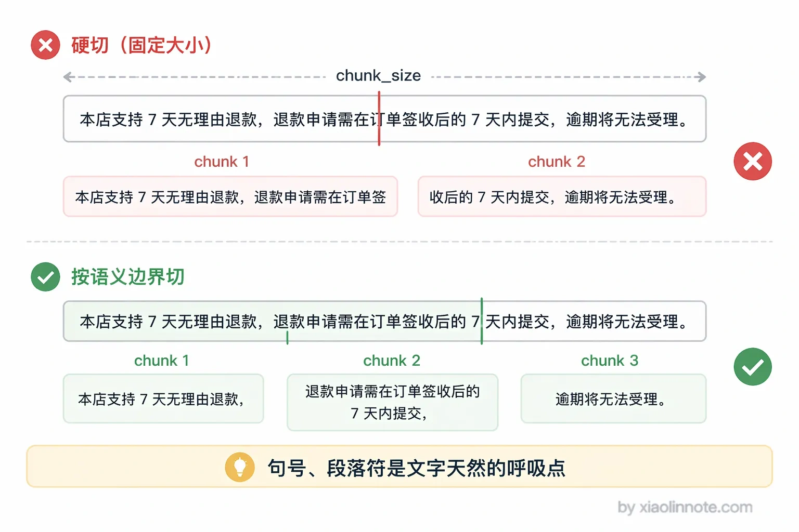
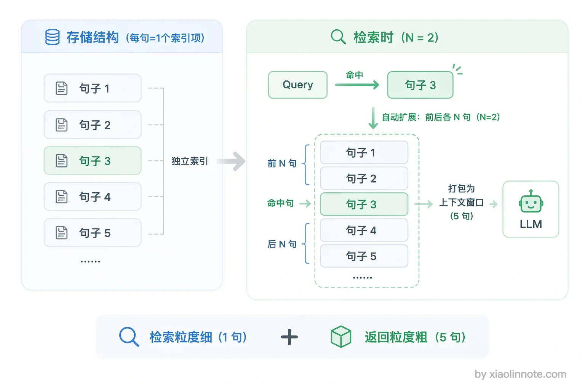
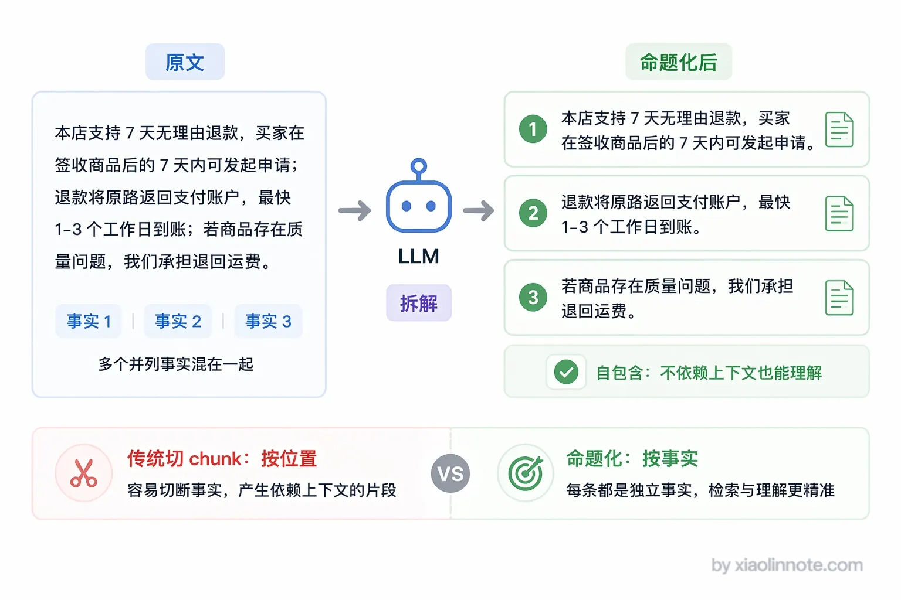
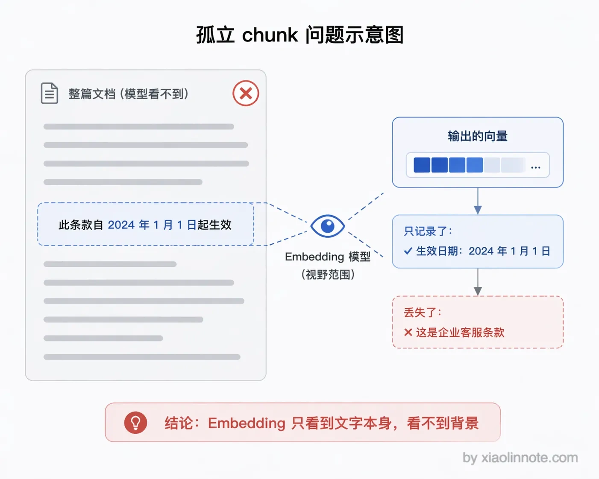
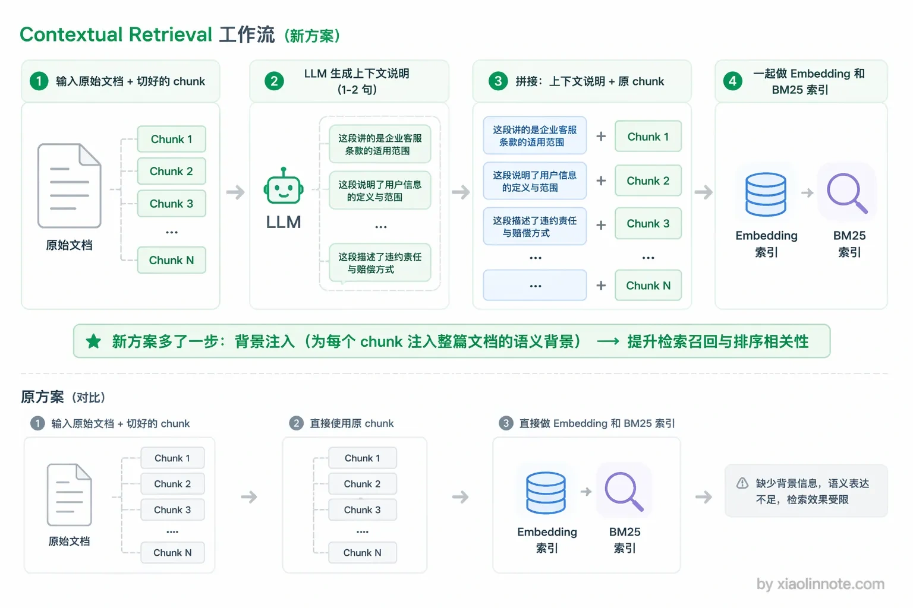
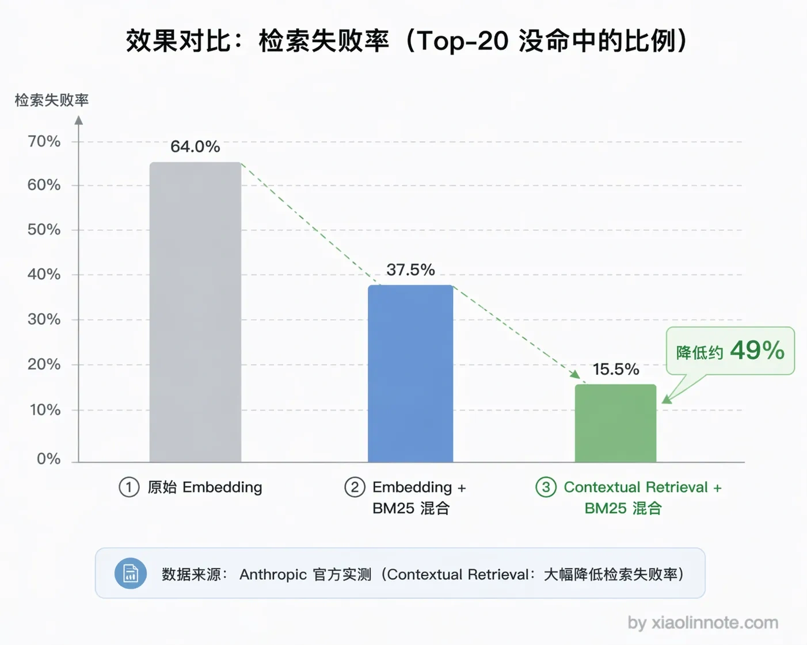

怎么规避语义被切割掉的问题？
👔面试官：Chunking 的时候语义被切断是个很常见的问题，你有没有遇到过？怎么处理的？
🙋♂️我：遇到过，加个 overlap 重叠就好了，前后重叠个 100 token，基本不会出问题。
👔面试官：overlap 只是兜底方案，它能保证跨边界的文字不丢失，但解决不了「一个完整语义被拆散」的问题。比如「企业用户享有优先客服通道，响应时间不超过 2 小时，并可申请专属技术顾问服务」这句话被切成两段，两段单独看相关度都不高，overlap 帮得了吗？
🙋♂️我：呃……那就把 chunk 设大一点，每个 chunk 包含更多内容，就不会断了。
👔面试官：chunk 越大，语义越杂，检索精度越差。你这是用一个问题去换另一个问题。句子窗口检索呢？父子切割呢？Contextual Retrieval 呢？一个都没听说过？
好吧，语义截断这个问题远比加个 overlap 复杂，下面我来把各种方案讲透。
💡 简要回答
我的思路是从两个方向来规避这个问题。第一个方向是切的时候就不要在语义中间截断，用重叠切割和语义边界切割来保证每个 chunk 内容是完整的，也就是按句子、段落这些自然的边界来切。
第二个方向是切完之后用检索策略把上下文补回来，核心方案是句子窗口检索，命中一个句子就把周围几句一起返回给 LLM；另外还有父子切割，小块检索命中、大块内容输出。
还有一个我觉得比较有价值的方案，是 Anthropic 提出的 Contextual Retrieval，在做 Embedding 之前先让大模型看着整篇文档为每个 chunk 生成一段背景说明，把这段背景和 chunk 拼在一起再向量化，从根本上解决孤立 chunk 没头没尾的问题。
📝 详细解析
语义被切割是什么问题?
先把问题说清楚。假设文档里有这样一段内容：
...前三条款适用于个人用户。
第四条：企业用户享有优先客服通道，响应时间不超过 2 小时，
并可申请专属技术顾问服务。此条款自 2024 年起生效。...
如果 chunk 的边界恰好切在「响应时间不超过 2 小时，」这里，那「企业用户享有优先客服通道」和「并可申请专属技术顾问服务」就被分到了两个 chunk。
你可能会想，两个 chunk 里都有部分答案，搜到其中一个不就行了？问题是，两个 chunk 单独来看相关度都不高，极可能都不会被召回，答案就断了。
这就是语义截断的核心问题：不是信息丢了，而是信息被拆散之后，每一半都不够强，检索时全军覆没。

方案一：重叠切割（Overlap）
最基础的方案，让相邻 chunk 之间有一段内容重叠，这样就算边界切在语义中间，跨边界的内容也一定会完整地出现在其中一个 chunk 里。
重叠量通常设为 chunk_size 的 10%～20%，比如 chunk_size=800，overlap=150。
你可能会问，为什么不直接设大一点，比如重叠 40%？这是实践经验摸出来的平衡点：太小了（比如 5%）重叠区域覆盖不了完整的跨边界语义，保护效果弱；太大了（比如 40%）重复内容太多，存储和检索成本上升，而且大量重复内容还会干扰 LLM 的阅读和理解。
重叠切割是所有方案的基础，几乎每个 RAG 系统都应该开启，但它只是兜底，不能彻底解决语义截断问题。很多人以为加了 overlap 就万事大吉了，其实它只能保证跨边界的文字不丢失，解决不了「一个完整语义被拆散」的根本问题。
方案二：按语义边界切割
重叠切割既然只是兜底，那能不能在切的时候就更聪明一点，直接避免在语义中间截断？这就是语义边界切割的思路——找到文本中自然的语义边界再切。为什么要识别句子边界？
因为句子是语言表达意思的最小完整单位，一个完整的句子包含了主语、谓语、宾语，能独立表达一个意思。把句子从中间截断，前半截和后半截单独来看都是残缺的，向量化后的语义也是扭曲的。
实际操作时，可以用 NLP 工具（比如 spacy 或 nltk）识别句子结束位置，然后以句子为单位填充 chunk：把句子一条条往当前 chunk 里加，加满了就封存这个 chunk 开启新的，不会在句子中间截断。对于段落分明的文档，还可以在句子边界的基础上优先在段落边界处切，效果更好。

方案三：句子窗口检索（Sentence Window Retrieval）
前面两种方案都是在「怎么切」上做文章，到了这一步，思路就变了——切归切，检索的时候再把上下文补回来。这个方案的思路和前两个完全不同，它不是在「切」上做文章，而是在「检索后如何返回上下文」上做文章。类比一下：就像你在图书馆里用关键词找到了某本书里的一句话，但你实际阅读的是这句话所在的整个段落，而不是只拿走那一行文字。
具体做法是：存储时把文档切成单个句子，每个句子单独做向量，用于精准检索；检索命中一个句子后，并不只返回这一个句子，而是把这个句子前后各 N 个句子一起返回，形成一个上下文窗口，交给 LLM 阅读。

这样的好处是两全其美：检索粒度细（单句），定位准确，相关性高；但给 LLM 的内容是完整的上下文窗口，不会因为检索粒度太细而导致 LLM 拿到的信息不完整。缺点是存储量较大，每个句子都需要单独向量化，库里的记录数等于文档的句子总数。
方案四：父子切割（Parent-Child Chunking）
理解了句子窗口检索的「检索命中后动态扩展上下文」思路，父子切割就很好懂了，它是一种更结构化的实现方式。
父子切割的思路是「用小 chunk 检索，用大 chunk 生成」：存储时同一段内容存两份，一份是细粒度的小 chunk（比如 200 token），一份是包含这个小 chunk 上下文的大 chunk（比如 1000 token），两者通过 ID 关联。检索时用小 chunk，语义聚焦，召回精度高；命中后把对应的大 chunk 返回给 LLM，上下文更完整，生成质量更好。
和上面句子窗口检索对比：句子窗口是检索命中后动态扩展上下文，父子切割是提前把父子关系存好。两者思路相近，父子切割更灵活（父 chunk 大小可以精确控制），句子窗口实现更简单（不需要维护父子 ID 关系）。
方案五：命题化切割（Propositions-based Chunking）
前面几种方案都是在「怎么切」或「切完怎么补上下文」上想办法，那有没有一种方案能从根本上让每个 chunk 天然就是完整独立的？命题化切割就是冲着这个目标来的。这是质量最高但成本也最高的方案，思路不按文本位置切割，而是用 LLM 把文档分解成一条条独立的「命题」（Proposition）。每个命题是一个完整、自包含的陈述句，包含了表达这个事实所需的全部上下文，单独拿出来就能看懂，不依赖上下文，只包含一个核心事实。
举个例子来感受一下。原文是「企业用户享有优先客服通道，响应时间不超过 2 小时，并可申请专属技术顾问服务。」分解成命题后变成三条独立陈述：「企业用户享有优先客服通道。」「企业用户的客服响应时间不超过 2 小时。」「企业用户可以申请专属技术顾问服务。」这三条单独拿出来都能看懂，不需要任何上下文辅助，向量化后的语义密度极高。

命题化切割的优势是每个 chunk 的语义密度最高、最独立，检索精度非常好。缺点是需要额外的 LLM 调用来生成命题，成本比较高，适合对质量要求极高的场景。
方案六：Contextual Retrieval（Anthropic）
命题化切割是用 LLM 重新组织 chunk 内容，而 Contextual Retrieval 则换了一个角度：不改变 chunk 本身，而是在向量化之前把缺失的上下文补进去。这是 Anthropic 在 2024 年提出的方案，思路和前面几种完全不同，它不是在「怎么切」或「检索后怎么扩展」上做文章，而是在向量化之前就把缺失的上下文补进去。
先说一下这个方案要解决的根本问题：chunk 被单独拿出来后就失去了语境。
一个 chunk 在向量化时，Embedding 模型只能看到这段文字本身，根本不知道它来自哪篇文档、讲的是什么主题。比如「此条款自 2024 年 1 月 1 日起生效」这段文字，单独向量化后完全丢失了「这是企业版客服条款」这一关键信息，检索时自然容易被无关内容干扰。
你可能会觉得奇怪，向量不是能捕捉语义吗，为什么会丢信息？原因很简单：向量只能捕捉它「看到」的文字里的语义，它看不到的那部分背景信息，自然没法编码进向量里。向量里没有主题信息，是孤立 chunk 召回质量低的根本原因。

核心做法分两步：
- 生成 Context：让 LLM 看着整篇原始文档，为每一个切出来的 chunk 生成一段简短的背景说明（通常 1～2 句话），说清楚这个 chunk 在整篇文档里处于什么位置、讲的是什么
- 拼接再向量化：把生成的 Context 前置拼到 chunk 前面，然后把这个「Context + chunk」整体去做 Embedding 和 BM25 索引
具体来说，这一步会用 LLM 传入完整文档和当前 chunk，让模型生成「这段内容是关于什么的」的背景说明，再把背景说明和原始 chunk 拼在一起，整体向量化入库。
举个例子来感受一下效果。假设原始 chunk 是：
此条款自 2024 年 1 月 1 日起生效，适用于所有企业版订阅用户。
没有上下文时，这个 chunk 孤立地看完全不知道「此条款」指的是什么，向量检索时很容易被其他内容干扰。
Contextual Retrieval 生成的 Context 可能是：
这段内容说明了企业用户专属客服和技术顾问服务条款的生效日期和适用范围。
拼在一起向量化的就是：
这段内容说明了企业用户专属客服和技术顾问服务条款的生效日期和适用范围。
此条款自 2024 年 1 月 1 日起生效，适用于所有企业版订阅用户。
现在这个 chunk 的向量里就包含了「企业用户」「客服条款」「生效日期」这些关键语义，检索时被正确召回的概率大幅提升。

成本控制：用 Prompt Caching 大幅降低 LLM 调用费用
你可能会担心，每个 chunk 都要调一次 LLM，这成本得多高？确实，这是 Contextual Retrieval 最大的顾虑，但 Anthropic 的 Prompt Caching 特性可以把这个成本降低 80%-90%：
每次调用时，full_document（完整文档）在所有 chunk 的请求里是相同的前缀。开启 Prompt Caching 后，第一次调用会把文档内容缓存到 KV Cache，后续同一篇文档的所有 chunk 请求都复用这份缓存，只有 chunk 部分需要重新计算。
算一下账就清楚了：一篇有 100 个 chunk 的文档，传统做法要把整篇文档的 token 重复处理 100 次；开启 Prompt Caching 后，第一次写入缓存时文档部分按正常价的 1.25 倍计费（25% 的写入溢价），后续 99 次命中缓存的部分只按正常价的 10% 计费。综合下来文档部分的成本能降到原来的 10%～20% 区间。按 Anthropic 官方给的参考数据，8k token 的文档配合 800 token 的 chunk，上下文化处理一百万文档 token 的总成本大约 1 美元出头，整体可控。工程上只需要在调用时把文档内容标记为可缓存前缀，框架就会自动复用。
根据 Anthropic 的测评数据，Contextual Retrieval 结合 BM25 混合检索，能将检索失败率（Top-20 召回未命中目标 chunk 的比例）降低约 49%，是目前业界实测效果最显著的 chunk 质量提升方案之一。

把几种方案的核心思路对比一下，实际选型时按场景组合使用：
| 方案 | 核心思路 | 适合场景 | 代价 |
|---|---|---|---|
| 重叠切割 | 相邻 chunk 有内容重叠 | 所有场景，基础兜底 | 存储轻微增加 |
| 语义边界切割 | 在句子/段落边界处切 | 段落结构清晰的文档 | 需要 NLP 工具 |
| 句子窗口检索 | 精细检索 + 扩展返回窗口 | 追求高召回精度 | 存储量大 |
| 父子切割 | 小块检索、大块返回 | 通用场景，效果均衡 | 存储翻倍、索引复杂 |
| 命题化切割 | LLM 拆解为独立命题 | 高质量要求、重要知识库 | LLM 调用成本高 |
| Contextual Retrieval | 向量化前为每个 chunk 补全背景上下文 | 文档语境强、chunk 孤立感严重的场景 | LLM 调用成本（Prompt Caching 可大幅降低） |
🎯 面试总结
回到开头那段面试，语义截断问题的回答不能只停留在「加个 overlap」。
面试官想听的是你对问题本质的理解和多种方案的掌握。先说清问题：chunk 被单独拿出来后失去语境，语义被拆散导致检索召回不到。
然后分两个方向讲方案：一是「切的时候别截断」，包括重叠切割、语义边界切割；二是「切完之后补上下文」，包括句子窗口检索、父子切割、命题化切割、Contextual Retrieval。
实际工程中通常是组合使用：重叠切割做兜底，语义边界切割保证切割质量，对高质量要求的场景再加父子切割或 Contextual Retrieval。能把这个组合思路讲出来，面试官就满意了。